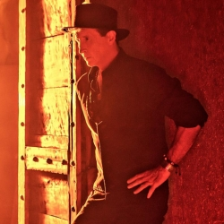

Biografía: Primeros años y origenes
Emmanuel, cuyo nombre completo es Jesús Emmanuel Arturo Acha Martínez, nació el 16 de abril de 1955 en Ciudad de México. Desde muy joven, mostró un notable interés por la música, influenciado en gran parte por su padre, el famoso matador de toros Raúl "Rovira" Acha. Su madre, española, también contribuyó a su riqueza cultural y artística. Durante su niñez y adolescencia, Emmanuel tomó clases de música y canto, desarrollando un talento vocal extraordinario. A pesar de las expectativas familiares de continuar la carrera taurina, su pasión por la música finalmente prevaleció.
Primeros pasos en la musica
En los años setenta, Emmanuel comenzó a involucrarse más activamente en el mundo de la música. Sus primeros intentos fueron como parte de un grupo musical, pero fue como solista que encontró su camino. En 1976, lanzó su primer álbum titulado Emmanuel, que incluyó varios temas con un estilo romántico, estableciendo una sólida base de seguidores.
Primera etapa de Éxitos
La década de los ochenta marcó el ascenso vertiginoso de Emmanuel en el panorama musical de América Latina y España. Álbumes como Íntimamente (1980) y Emmanuel (1982) incluían canciones que se convirtieron en grandes éxitos, como "Todo se Derrumbó Dentro de Mí" y "Quiero Dormir Cansado". Su estilo, una mezcla de balada romántica y pop, resonó profundamente con el público.
